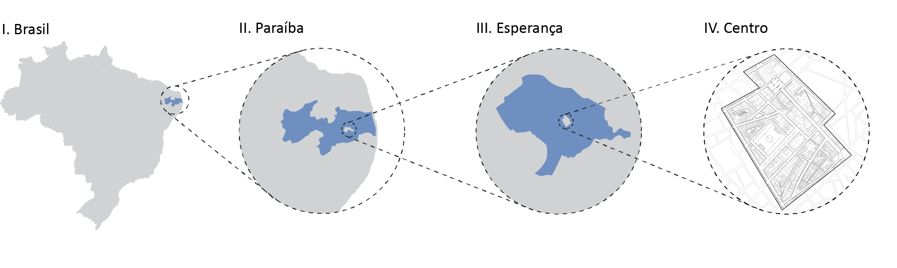
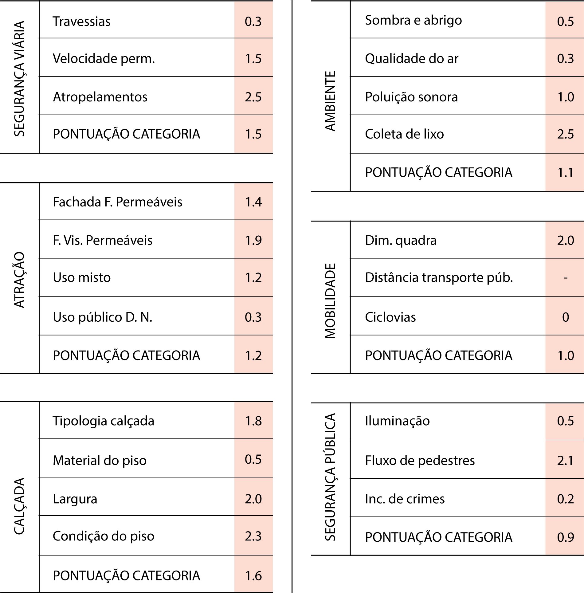

©2017 LabRua
Template: Bootstrapious
+ Kishan B

Uma análise do índice de caminhabilidade em Esperança
2018-04-09; resultados, pesquisa, caminhabilidade
A pesquisa que o LabRua vem desenvolvendo na cidade de Esperança, incluiu uma análise detalhada da área central do município e levantou várias questões sobre a condição de circulação dos pedestres que circulam na área. Impulsionados pelo tema, a equipe de envolvida analisou o índice de caminhabilidade em seu núcleo central.
por Fernando Vasconcelos e Robson Porto
As cidades brasileiras vêm crescendo e se organizando de forma que seu desenho se adapte aos meios de transporte atuantes. O que vem ocorrendo, a partir disso, é a priorização do veículo motorizado individual, e pouco atenção é dada aos veículos não-motorizados e transporte coletivos. Essa relação não foi diferente em Esperança, localizada no interior da Paraíba e com uma população de 36 mil habitantes (IBGE, 2017).
Mapa de localização do núcleo central de Esperança-PB

LabRua, 2018
O município estudado, mesmo diante deste cenário, ainda é um praticante do pedestrianismo. Todavia, apesar de se ter um grande número de pedestres nos espaços públicos do núcleo central, a caminhada não é incentivada devido à falta de infraestrutura adequada. O que se percebe é que o núcleo central se tornou um local apenas de passagem e de pouca permanência de pessoas nos espaços públicos.
Para o estudo realizado neste trabalho foram consideradas as ruas Manoel Rodrigues de Oliveira e Clemente de Farias, por se caracterizam como as principais vias do núcleo central. Nelas há uma grande concentração de comércios, o que atrai um maior fluxo dos diferentes modais. Além disso, parte da Rua Manoel Rodrigues abrange um trecho da BR 104. Importantes equipamentos da cidade encontram-se situado nesta área, como a Praça da Cultura (assim conhecido, por seus usuários) e a Igreja Matriz Nossa Senhora do Bom Conselho.
Os estudos realizados pelo LabRua na área, englobaram a análise dos seguintes aspectos: uso e ocupação do solo, sistema viário, atributos ambientais, mobilidade urbana, equipamentos urbanos, ações comportamentais, comportamento dos pedestres e contagem dos modais. Através de visitas in loco, entrevistas e vivência nos espaços, foram observados aspectos quantitativos e qualitativos da área.
O cálculo do índice de caminhabilidade se baseou na metodologia do ITDP-Brasil (Instituto de Políticas de Transporte e Desenvolvimento) e do IRPH (Instituto Rio Patrimônio da Humanidade), o qual estabelece um índice composto por 21 indicadores agrupados em seis diferentes categorias, sendo elas: segurança viária (travessias, velocidade permanente e atropelamentos); atração (fachadas fisicamente permeáveis, fachada visualmente permeáveis, uso misto e uso público); calçada (tipologia das calçadas, material do piso, largura, condições do piso); ambiente (sombra e abrigo; qualidade do ar; poluição sonora; coleta de lixo); mobilidade (dimensão da quadra, distância do transporte público, ciclovias); e segurança viária (iluminação, fluxo de pedestre, incidência de crimes).
Este índice permite que seja feita uma avaliação do espaço urbano diagnosticando suas reais condições de uso, caracterizando se são ou não favoráveis ao deslocamento a pé. A partir disto, uma tabela resumo foi elaborada para analisar a área estudada, onde nela apresentamos as notas referentes aos índices julgados de acordo com o índice de caminhabilidade.
Tabela 1 | Resultado da aplicação do índice de Caminhabilidade das ruas Manoel Rodrigues de Oliveira e Clemente de Farias.

LabRua, 2018
Apesar do alto número de pedestres circulando no núcleo central de Esperança, os resultados demonstram que o índice de caminhabilidade das ruas estudadas é insatisfatório. Das seis variáveis analisadas uma apresentou resultado insuficiente e as demais apresentaram resultado aceitável. Esse resultado demonstra que há pouca atenção e investimentos sendo despendidos em ações que priorizem as calçadas e demais espaços para os pedestres.
A infraestrutura ofertada ao pedestre se apresenta, portanto, como insuficiente, fato preocupante se tratando de uma cidade de pequeno porte, onde as distâncias são curtas e o caminhar pode ser mais facilmente encorajado que em cidades maiores. Isto implica dizer que o poder público deve priorizar os investimentos, trabalhando na redemocratização e requalificação dos espaços públicos disponíveis à população, gerando maior conforto e condições de uso tanto para passagem como para permanência dos usuários nos espaços urbanos.
Além disso, outro fato alarmante, é que a análise foi realizada em duas das principais vias do município, possuindo maior cuidado e atenção e gerando questionamento sobre as áreas periféricas e como estas estão sendo assistidas pelo poder público. Desta forma, esta análise expõe não apenas a problemática das ruas estudadas, deixando a entender também a configuração atual do seu entorno.
Diante dos resultados, o LabRua pretende despertar a importância de coletar (e analisar) dados desta natureza em cidades de pequeno porte, como uma forma de acenar para que os problemas de mobilidade das cidades de médio e grande porte não se reproduzam, para evitar uma possível tendência de, infelizmente, crescer e copiar modelos de cidades maiores e vizinhas, consequentemente repetindo erros comumente causados pela falta de planejamento urbano.
.